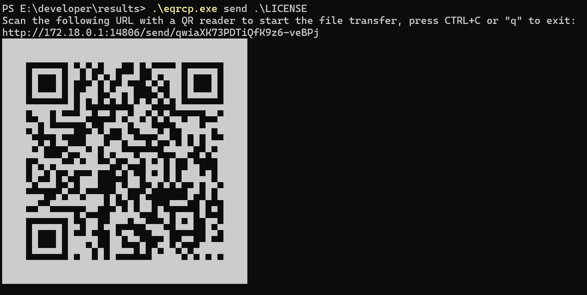
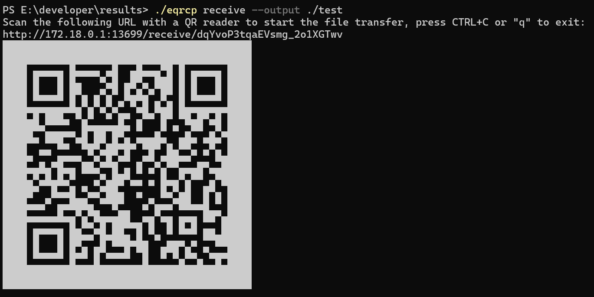
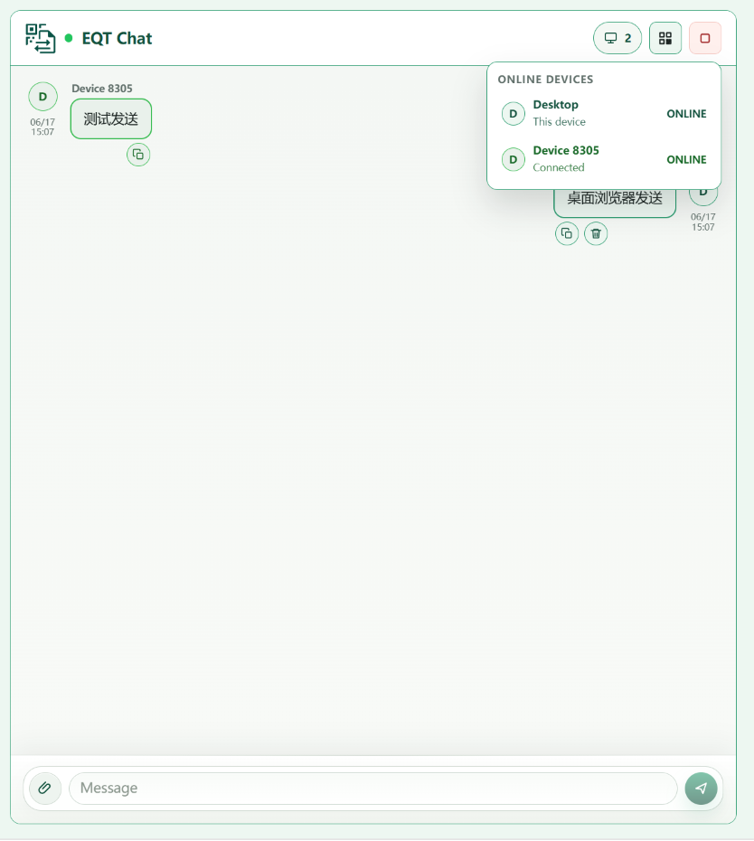
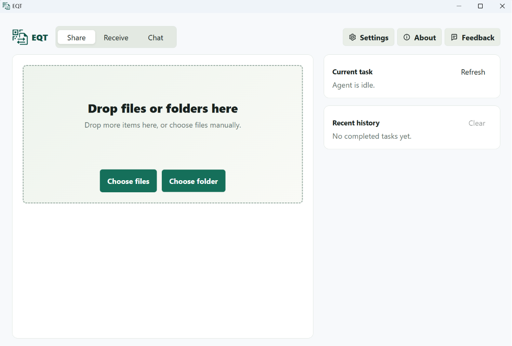
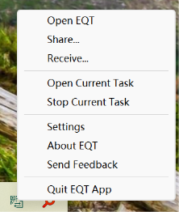
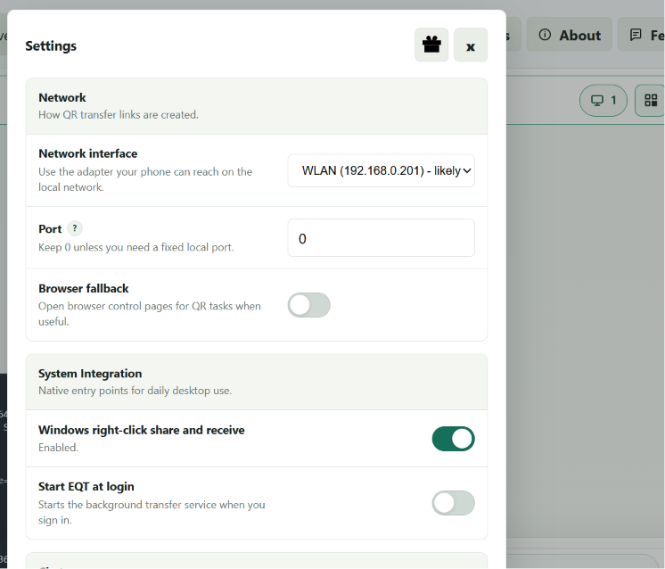
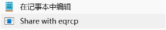

软件名称: EQT Easy QR Transfer 局域网文件传输系统
软件版本: V1.0
适用平台: Windows/Linux/macOS
编制日期: 2026年5月
EQT 是一款简单易用的局域网文件传输工具，通过在计算机终端或桌面 GUI 显示二维码，实现计算机与移动设备之间的快速文件传输。无需安装移动端应用，移动设备通过浏览器扫码即可直接访问并进行交互。
1. 文件发送: 将计算机上的文件发送到移动设备
2. 文件接收: 从移动设备接收文件到计算机
3. 实时聊天: 局域网内多设备实时文本和文件交流
4. 桌面 GUI 与托盘: 提供可视化的控制主窗口与系统托盘操作
5. 桌面右键集成: Windows系统资源管理器右键菜单快速分享/接收
6. 安全传输: 支持HTTPS加密传输
计算机端:
移动设备端:
1. 下载eqrcp.exe与eqrcp-launcher.exe可执行文件。
2. 将文件放到任意目录（建议：C:\Program Files\eqrcp\）。
3. 将该目录添加到系统PATH环境变量。
添加PATH步骤:
1. 右键"此电脑" → "属性"。
2. 点击"高级系统设置"。
3. 点击"环境变量"。
4. 在"系统变量"中找到"Path"，点击"编辑"。
5. 点击"新建"，输入eqrcp所在目录路径。
6. 点击"确定"保存。
打开命令提示符（cmd），输入：
eqrcp version
如果显示版本信息，说明安装成功。
在命令提示符中执行：
eqrcp desktop install
安装完成后，右键点击文件或文件夹，会出现"Share with eqrcp"选项。
1. 下载eqrcp可执行文件。
2. 添加执行权限：
chmod +x eqrcp
3. 移动到系统PATH目录：
sudo mv eqrcp /usr/local/bin/
eqrcp version
1. 下载eqrcp可执行文件。
2. 添加执行权限：
chmod +x eqrcp
3. 移动到系统PATH目录：
sudo mv eqrcp /usr/local/bin/
macOS可能提示"无法验证开发者"，解决方法：
1. 打开"系统偏好设置" → "安全性与隐私"。
2. 点击"仍要打开"。
3. 或在终端执行：
sudo xattr -r -d com.apple.quarantine /usr/local/bin/eqrcp
首次使用建议运行配置向导：
eqrcp config
配置向导会引导您设置：
配置文件保存位置：
~/.config/eqrcp/config.yml%APPDATA%\eqrcp\config.yml在终端中执行：
eqrcp 文件路径
示例:
eqrcp ~/Documents/report.pdf
执行后，终端会显示：
1. 访问URL
2. 二维码
3. 等待连接提示

图3.1 命令行运行发送文件命令并显示二维码
使用移动设备扫描二维码，浏览器会自动打开下载页面，点击下载即可。
eqrcp 文件1 文件2 文件3
示例:
eqrcp photo1.jpg photo2.jpg photo3.jpg
系统会自动将多个文件打包成zip压缩包供下载。
eqrcp 目录路径/
示例:
eqrcp ~/Pictures/Vacation/
目录会被打包成zip压缩包，下载后解压即可。
即使是单个文件，也可以强制打包成zip：
eqrcp --zip large-video.mp4
在终端中执行：
eqrcp receive
终端显示二维码后，用移动设备扫码，会打开上传页面。
eqrcp receive --output /path/to/directory
示例:
eqrcp receive --output ~/Downloads/
在移动设备浏览器中：
1. 点击"选择文件"按钮。
2. 选择一个或多个文件。
3. 点击"上传"按钮。
4. 等待上传完成。

图3.2 移动设备浏览器端文件上传界面
在上传页面中：
1. 在文本框中输入或粘贴文本。
2. 点击"发送文本"按钮。
3. 文本会保存为.txt文件。
在支持的浏览器中（Chrome、Safari）：
1. 复制图片到剪贴板。
2. 在上传页面点击"粘贴剪贴板"。
3. 图片会自动上传并保存为.png文件。
eqrcp chat
如果想同时在浏览器中打开：
eqrcp chat --browser
1. 移动设备扫码进入聊天页面。
2. 在输入框输入消息，点击发送。
3. 消息会实时显示在所有连接的设备上。
4. 点击附件按钮可以发送文件。

图3.3 局域网内多设备实时聊天页面
多个设备可以同时扫码加入同一个聊天室，实现多人聊天。
在终端按Ctrl+C停止服务。
如果计算机有多个网络接口（如有线和无线），可以指定使用哪个：
eqrcp --interface wlan0 file.pdf
查看可用接口：
ip addr # Linux
ifconfig # macOS
ipconfig # Windows
eqrcp --port 8080 file.pdf
使用随机端口（默认）：
eqrcp --port 0 file.pdf
eqrcp --path myfiles file.pdf
生成的URL会是：http://192.168.1.100:8080/myfiles
使用随机路径（默认，更安全）：
eqrcp --path "" file.pdf
如果配置了局域网DNS或hosts：
eqrcp --fqdn mycomputer.local file.pdf
eqrcp --secure --tls-cert cert.pem --tls-key key.pem file.pdf
openssl req -x509 -newkey rsa:4096 -keyout key.pem -out cert.pem -days 365 -nodes
注意: 使用自签名证书时，移动设备浏览器会显示安全警告，需要手动信任。
默认情况下，传输完成后服务会自动关闭。如果需要保持运行：
eqrcp --keep-alive file.pdf
这样可以多次下载同一个文件，或接收多个文件。
手动停止服务：按Ctrl+C
除了在终端显示二维码，还可以在浏览器中打开：
eqrcp --browser file.pdf
浏览器会打开一个页面显示二维码，方便截图分享。
如果终端背景是浅色，二维码可能不清晰，可以使用反色：
eqrcp --reversed file.pdf
EQT 提供了一个轻量级的桌面 GUI 客户端和系统托盘控制程序，方便用户无需命令行即可管理文件传输和进行实时聊天。
运行编译生成的 eqrcp-launcher.exe（或在桌面上点击 EQT 快捷方式），即可启动 EQT 桌面后台代理与 GUI 主界面。
启动后，桌面右下角系统托盘区会出现 EQT 的绿色小图标。主界面会展示：
1. 服务状态：显示当前局域网服务是否在运行。
2. 网络接口选择：下拉菜单选择要监听的网卡 IP。
3. 端口与路径设置：输入自定义端口或路径，或者保持随机分配。
4. 分享二维码展示：启动服务后直接展示连接二维码。

图5.1 EQT 桌面客户端主界面
右键点击系统托盘区的 EQT 图标，会弹出托盘控制菜单，提供以下快捷操作：
1. 显示主窗口 (Show Window)：点击打开桌面 GUI 主界面。
2. 启动/停止接收服务 (Start/Stop Receive)：一键启动局域网接收服务并展示二维码。
3. 启动聊天室 (Open Chat)：启动本地 Chat 网页并自动在默认浏览器中打开。
4. 桌面集成设置 (Integration Settings)：一键安装或卸载 Windows 右键菜单集成。
5. 退出程序 (Exit)：完全退出后台服务及托盘控制程序。

图5.2 系统托盘快捷菜单
在主界面中点击“设置”按钮，可进入设置面板，进行以下配置：
1. 开机自启动：配置 EQT 随 Windows 启动自动运行在后台托盘。
2. 保存路径选择：修改局域网接收到的文件默认存放目录。
3. 默认HTTPS配置：开启 TLS 加密，并配置本地证书路径。

图5.3 桌面客户端设置面板
在命令提示符中执行：
eqrcp desktop install
安装后会添加：
1. 文件右键菜单："Share with eqrcp"
2. 文件夹右键菜单："Share with eqrcp"
3. "发送到"菜单："Share with eqrcp"
1. 右键点击文件。
2. 选择"Share with eqrcp"。
3. 会弹出窗口显示二维码。
4. 移动设备扫码下载。

图6.1 Windows系统右键菜单与桌面分享弹窗
1. 选中多个文件。
2. 右键选择"发送到" → "Share with eqrcp"。
3. 文件会打包成zip供下载。
1. 右键点击文件夹。
2. 选择"Share with eqrcp"。
3. 文件夹会打包成zip供下载。
右键点击文件夹，选择"Receive with eqrcp"（如果已配置），可以直接接收文件到该文件夹。
eqrcp desktop status
会显示当前桌面集成的安装状态。
eqrcp desktop uninstall
会移除所有右键菜单项。
~/.config/eqrcp/config.yml%APPDATA%\eqrcp\config.yml# 网络接口（any表示自动选择）
interface: any
# 端口（0表示随机端口）
port: 0
# URL路径（空表示随机路径）
path: ""
# 完全限定域名
fqdn: ""
# 保持服务运行
keepalive: false
# 启用HTTPS
secure: false
# TLS证书路径
tls-cert: ""
# TLS私钥路径
tls-key: ""
# 接收文件保存目录
output: "."
# 在浏览器中打开
browser: false
# 反色二维码
reversed: false
eqrcp --config /path/to/config.yml file.pdf
所有配置项都可以通过环境变量设置，使用EQRCP_前缀：
Linux/macOS:
export EQRCP_INTERFACE=wlan0
export EQRCP_PORT=8080
export EQRCP_KEEPALIVE=true
eqrcp file.pdf
Windows:
set EQRCP_INTERFACE=WiFi
set EQRCP_PORT=8080
set EQRCP_KEEPALIVE=true
eqrcp file.pdf
命令行参数 > 环境变量 > 配置文件 > 默认值
问题: 扫码后浏览器无法打开页面
解决方法:
1. 确认计算机和移动设备在同一局域网。
2. 检查计算机防火墙是否阻止了端口。
3. 尝试手动输入URL而不是扫码。
4. 尝试指定不同的网络接口。
Windows防火墙设置:
1. 打开"Windows Defender 防火墙"。
2. 点击"允许应用通过防火墙"。
3. 点击"更改设置"。
4. 找到eqrcp或添加新应用。
5. 勾选"专用"和"公用"网络。
问题: 终端中的二维码无法扫描
解决方法:
1. 调整终端窗口大小，使二维码更大。
2. 使用--reversed参数反色显示。
3. 使用--browser参数在浏览器中显示。
4. 手动输入URL。
问题: 传输大文件时中途失败
解决方法:
1. 确保网络连接稳定。
2. 使用--keep-alive参数保持服务运行。
3. 移动设备浏览器支持断点续传的话可以重新下载。
4. 尝试使用--zip压缩后传输。
问题: 提示端口已被占用
解决方法:
1. 使用--port 0让系统自动分配端口。
2. 或指定其他端口：--port 8888。
3. 查找占用端口的程序并关闭。
查找占用端口的程序:
# Linux/macOS
lsof -i :8080
# Windows
netstat -ano | findstr :8080
问题: 移动设备上传文件时失败
解决方法:
1. 检查接收目录是否有写入权限。
2. 检查磁盘空间是否充足。
3. 尝试上传较小的文件测试。
4. 查看终端错误信息。
问题: 使用HTTPS时浏览器显示证书警告
解决方法:
1. 如果使用自签名证书，这是正常现象。
2. 在浏览器中点击"高级" → "继续访问"。
3. 或使用受信任的CA签发的证书。
问题: 下载的文件名显示乱码
解决方法:
1. 确保终端使用UTF-8编码。
2. 文件名尽量使用英文和数字。
3. 更新到最新版本。
--config string 配置文件路径
--interface, -i 网络接口名称
--port, -p 端口号（0表示随机）
--path URL路径（空表示随机）
--bind 绑定地址
--fqdn, -d 完全限定域名
--keep-alive, -k 保持服务运行
--secure, -s 启用HTTPS
--tls-cert TLS证书路径
--tls-key TLS私钥路径
--browser, -b 在浏览器中打开
--reversed, -r 反色二维码
--zip 强制使用zip压缩
eqrcp [选项] <文件路径...>
eqrcp receive [选项]
--output, -o 接收文件保存目录
eqrcp chat [选项]
eqrcp config
eqrcp desktop install # 安装
eqrcp desktop uninstall # 卸载
eqrcp desktop status # 状态
eqrcp desktop share <文件> # 分享
eqrcp desktop receive <目录> # 接收
eqrcp desktop chat # 聊天
eqrcp version
eqrcp help
eqrcp help <命令>
eqrcp completion bash # Bash
eqrcp completion zsh # Zsh
eqrcp completion fish # Fish
eqrcp completion powershell # PowerShell
创建Shell别名快速启动：
Linux/macOS (添加到~/.bashrc或~/.zshrc):
alias share='eqrcp'
alias receive='eqrcp receive'
alias chat='eqrcp chat --browser'
Windows (PowerShell配置文件):
function share { eqrcp $args }
function receive { eqrcp receive $args }
function chat { eqrcp chat --browser }
如果经常使用，可以在配置文件中设置固定端口和路径：
port: 8080
path: share
这样URL总是http://your-ip:8080/share，可以保存为书签。
使用--keep-alive参数，可以将eqrcp作为临时文件服务器：
eqrcp --keep-alive --port 8080 ~/Documents/
编写脚本批量传输文件：
#!/bin/bash
for file in *.jpg; do
eqrcp "$file"
read -p "按Enter继续下一个文件..."
done
# 截图后立即分享
scrot -s /tmp/screenshot.png && eqrcp /tmp/screenshot.png
# 压缩后分享
tar czf archive.tar.gz directory/ && eqrcp archive.tar.gz
# 从剪贴板分享
xclip -o > /tmp/clipboard.txt && eqrcp /tmp/clipboard.txt
EQT 设计用于局域网环境，不建议在公网使用。
传输敏感文件时建议启用HTTPS：
eqrcp --secure --tls-cert cert.pem --tls-key key.pem sensitive.pdf
使用随机URL路径（默认）可以防止未授权访问：
eqrcp file.pdf # URL会包含随机字符串
传输完成后及时关闭服务（默认行为），或按Ctrl+C手动停止。
在公共网络环境下，确保防火墙只允许局域网访问。
访问项目主页查看最新版本。
下载新版本可执行文件，替换旧文件即可。
Windows:
1. 如果安装了桌面集成，先执行：
eqrcp desktop uninstall
2. 删除可执行文件。
3. 删除配置文件：%APPDATA%\eqrcp\。
4. 从PATH环境变量中移除。
Linux/macOS:
1. 删除可执行文件：
sudo rm /usr/local/bin/eqrcp
2. 删除配置文件：
rm -rf ~/.config/eqrcp/
eqrcp help
eqrcp 命令的运行日志会输出到终端，可以重定向到文件：
eqrcp file.pdf 2>&1 | tee eqrcp.log
如遇到问题，请提供：
1. 操作系统和版本
2. eqrcp 命令版本（eqrcp version）
3. 完整的错误信息
4. 复现步骤
EQT 支持传输任何类型的文件，没有限制。
理论上没有文件大小限制，但受限于：
1. 可用磁盘空间
2. 网络传输时间
3. 浏览器内存限制（对于非常大的文件，建议使用专业下载工具）
文档版本: V1.0
最后更新: 2026年5月